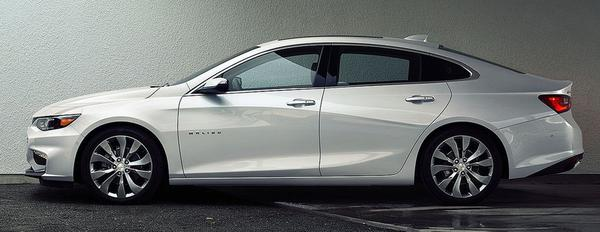

세상에는 수십가지의 자동차 브랜드가 있고 수 천종류의 자동차가 있다.
그 중에 자신의 좋아하는 차량을 찾는다는것은 재밌는일이다.
이번에 소개할 차량들은 내가 가장 좋아하고 사고 싶어하는 차량이다.
폭스 바겐(Volkswagen)
시로코 R 2.0 TSI(Scirocco R)2012
시로코 시리즈는 1974년 탄생했으며 지금까지 꾸준히 사랑 받고있는 차량중 하나이다.
시로코 R 2012년식은 폭스 바겐에서 개발한 TSI엔진을 쓰고있다.
그로 인해 소형차 임에도 불구하고 순정차량 제로백이 5.8초에 다다른다.
하지만 엔진의 유지비용이 조금 많이 든다는 것이 흠이다.
연비는 11.2km/ℓ 으로 4등급 판정을 좋다고 하기도 그렇고 안좋기도 한 그런 차량이다.
필자가 이 차량을 고른 이유는 지금 나오는 시로코 R 시리즈는 각을 살리는 디자인을 선택했지만
2012년 때만해도 곡선을 살리는 디자인이었고 필자가 그 디자인이 맘에 들었기 때문이다
시로코 R 전면
시로코 R 측면

시로코 R 전체
시로코 R 전체
시로코 R 전면
시로코 R 레이싱.ver
헤네시(Hennessey)
베놈 GT(Venom GT)
약간 생소할수도 있는 회사이름과 자동차일것이다.
헤네시는 기존에 나와있는 자동차를 튜닝해서 성능을 끌어올리는 회사이다.
그런 헤네시에서 가장 빠른 양산 자동차를 만들었는데 그것이 바로 헤네시 Venom GT이다.

로터스사의 엘리스.jpg
이 차는 로터스사의 엘리스를 기초를 해서 만들었으며 쉐보레 콜벳 엔진을 튜닝하여 장착했다.
마력은 1244마력, 토크는 163kg/m, 엔진은 7.0리터 V8터보 앤진이다.
마력이 어마어마해 제로백은 2.7초면 된다. 또한 300km/h까지 13.63초로 가장빠른 차이다.
다른 슈퍼카와 다르게 드라이빙 감각을 최대화하기 위해 전자장비가 없다는것이 특징이다.
순수하게 스피드만을 고집하는 차량이 맘에 들어 이 차량을 선택하였다.
베놈 GT 전면
베놈 GT 측면
베놈 GT 전체
베놈 GT 후면
베놈 GT 노랑.ver
베놈 GT 전면 파랑색.ver
쉐보레(Chevrolet)
올 뉴 말리부 2.0 가솔린 터보(MALIBU)2016
이번 말리부의 디자인은 2016년에 외국에서 출시하고 올해 우리나라에서 출시되는 그런차량이다.
2012년부터 뚱뚱한 이미지로 알려져 있었지만 이번에 파격적인 디자인으로 바뀐것이 특징이다.
엔진은 I4 형식이며 마력은 2.0터보기준 253마력이다. 연비는 2.0터보 기준으로 10.8km/ℓ이다.
또한 안전성 부분에서 '2016 올해 가장 안전한 차'로 선정되었다.
말리부는 원래 필자가 가장 사고 싶은 차여서 선택했었고 이번에 디자인이 바뀌면서 사고싶다는 마음이 더 강해졌다.
말리부 측면
말리부 후면
말리부 측면
말리부 측면
말리부 전면
말리부 전면
르노,르노삼성
SM6 2016
차를 잘 알지 못하는 사람이면 저 둘을 왜 붙혀 놨나 싶을 것이다. 원조는 오른쪽의 로고인 르노가 원조이다.
참고로 르노는 프랑스 자동차 회사.
2000년에 삼성 자동차가 르노에 인수 되면서 르노 삼성이 된것이다.
몇년 전만 해도 르노와 르노 삼성 서로 다른 차량을 만들고 있었지만
요새 르노와 르노 삼성이 같이 개발하는 모양이다.
이번에 소개할 SM6 또한 르노에서는 탈리스만이라고 불리고있다.
그러나 SM6와 탈리스만은 로고가 다르다. 오른쪽이 SM6 왼쪽이 탈리스만.
엔진은 말리부와 같이 I4 형식이며 LPG,가솔린, 디젤 연료 세가지를 쓰고있다.
연비는 1.5dCi 기준으로 17.5km/ℓ로 꽤나 괜찮은 연비를 가지고있다.
가장 대중적인 차로써 한대 갖고싶다는 생각이 들어 이 글을 썼다.